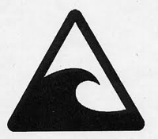
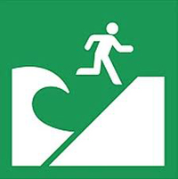
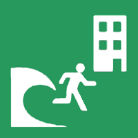

When there is no damage to your home or risk of fire in your area, do not be in a hurry to evacuate. However, if flames or smoke can be seen nearby, or if there is any danger from the smell of smoke in the air, immediately evacuate. If there is imminent danger, use your best judgment in evacuating.
If a disaster occurs, such as a tsunami, to find a label such as the following, take refuge in a safe place is available.
|  |  |  |
|---|---|---|
| Note tsunami | Tsunami evacuation site | Tsunami evacuation buildings |